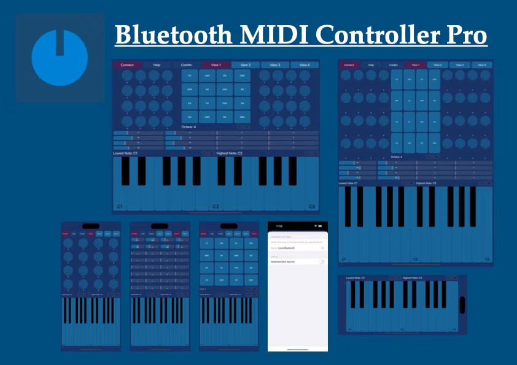

Demo
Bluetooth MIDI Controller Pro
If you liked Bluetooth MIDIController, Bluetooth MIDI Pads and Bluetooth MIDI Keyboard you will love Bluetooth MIDI Controller Pro. All the functionality from the three apps in only one and more.
Do you need a NanoKontrol like Bluetooth controller but you don't have it? Here you are BMC Pro: Connect and control every Bluetooth MIDI Host like soft instruments, DAWs, Hardware music devices, Mapping apps, lights...
Features:
-MIDI Keyboard full range with ajustable size.
-MIDI Pads Matrix full range.
-MIDI Knobs: 32 on iOS, 128 on iPadOS.
-MIDI Faders: 32 on iOS, 64 on iPadOS.
-The app sends MIDI data between apps inside de same device (no Bluetooth needed).
-Help View.
-The app keeps its state after restart the app.
-No app configuration needed: only connect with the Bluetooth MIDI Host, bind your parameters with the controls via MIDI learn and play the pads or the keyboard.